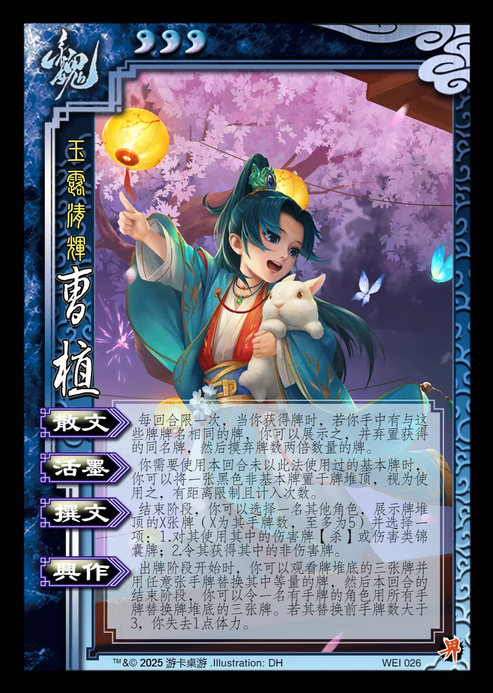

点击卡面查看大图
魏
曹植
♥3 技能卡玉露清辉
散文衍生
每回合限一次，当你获得牌时，若你手中有与这些牌牌名相同的牌，你可以展示之，并弃置获得的同名牌，然后摸弃牌数两倍数量的牌。
活墨衍生
你需要使用本回合未以此法使用过的基本牌时，你可以将一张黑色非基本牌置于牌堆顶，视为使用之，有距离限制且计入次数。
撰文衍生
结束阶段，你可以选择一名其他角色，展示牌堆顶的X张牌（X为其手牌数，至多为5）并选择一项：1.对其使用其中的伤害牌【杀】或伤害类锦囊牌；2.令其获得其中的非伤害牌。
兴作衍生
出牌阶段开始时，你可以观看牌堆底的三张牌并用任意张手牌替换其中等量的牌，然后本回合的结束阶段，你可以令一名有手牌的角色用所有手牌替换牌堆底的三张牌。若其替换前手牌数大于3，你失去1点体力。